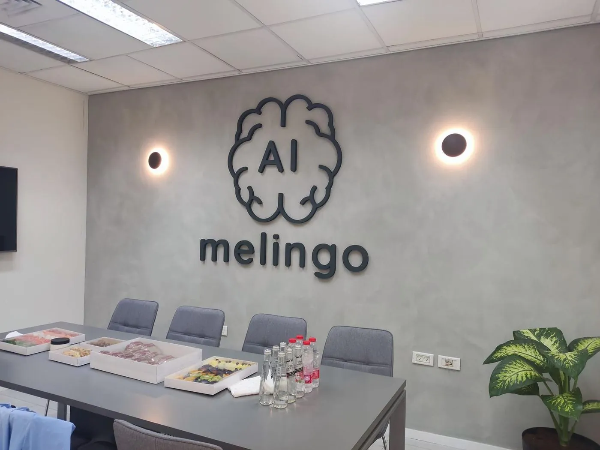
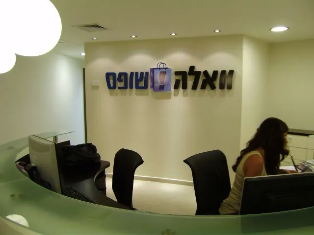
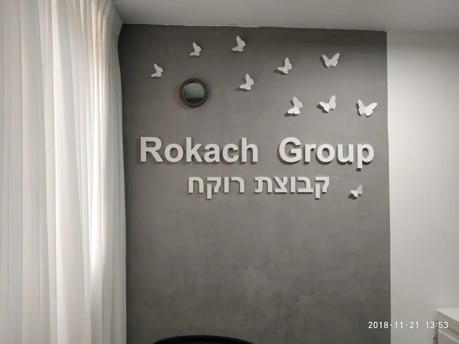
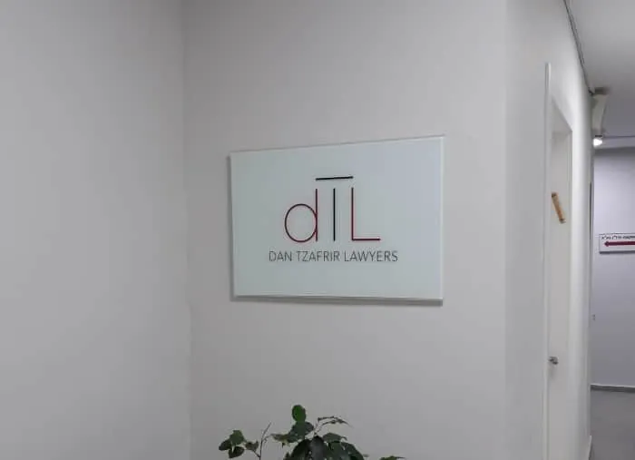
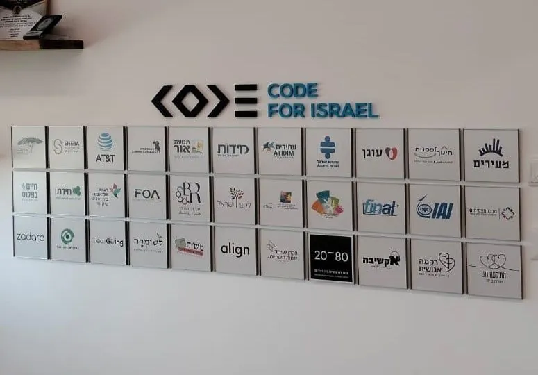

שילוט למשרדים: שביום הכניסה, המשרד כבר ייראה שלכם.
שילוט למשרדים הוא כל מה שאורח פוגש מהדלת פנימה: שלט הכניסה, הלוגו על קיר הקבלה, השלטים של חדרי הישיבות, המסדרון והקומה.
פלומבה שלטים מתכננת, מעצבת, מייצרת ומתקינה שלטים למשרדים כפרויקט אחד, לחברות הייטק, למשרדי עורכי דין ורואי חשבון, לקליניקות ולמרכזים רפואיים, לחברות נדל״ן ולמשרדי ממשלה. השלטים מזכוכית, אלומיניום, פרספקס ו-PVC מוקצף, עם תאורה או בלי. שולחים תוכנית או צילומים של המשרד, מקבלים המלצה והדמיה בלי עלות, והשלטים מוכנים בדרך כלל תוך 5 עד 15 ימי עבודה.
שילוט למשרדים שכבר מקבל אורחים.







- וגם: CYNET, Celeno, Ecoppia, Anobit, ספרה, CreoSmile ו-Shenkar-Lax.
מה כולל שילוט למשרד?
- בכניסה: שלט זכוכית על ברגי הרחקה, עם הלוגו מודפס בגב הזכוכית, כמדבקה או באותיות בולטות.שלטי זכוכית
- בקבלה: הלוגו בתלת מימד על הקיר שמאחורי הדלפק, מ-PVC מוקצף, מאלומיניום או מפרספקס.אותיות בולטות
- בחדרי הישיבות: הלוגו על הקיר, כמו אצל melingo, ושלט על הדלת.
- במסדרון ובקומה: שלטי חדרים, שלטי הכוונה ולוח החברות ליד המעלית.שילוט הכוונה
- על הקירות והחלונות: מיתוג קירות במדבקות מודפסות, קיר לוגואים, ומדבקה בדמוי התזת חול על הזכוכית.הדפסות
משרד אחד, הרבה קירות. כשמתכננים את כולם יחד, הלוגו בכניסה והשלט על חדר הישיבות מדברים באותה שפה, ולא נראים כאילו הגיעו משלושה ספקים.
איזה חומר לאיזה מקום?
- זכוכית: לכניסה ולחדרים, בעובי 4 עד 10 מ״מ. אקסטרה קליר, בלי הגוון הירקרק של זכוכית רגילה, או חלבית שמבטלת את השקיפות.
- PVC מוקצף: ללוגו בקבלה, בעובי 6 עד 30 מ״מ ובכל גוון. בעבודות שלנו, העובי שחוזר הכי הרבה הוא 19 מ״מ.אותיות PVC
- אלומיניום: לאותיות בנויות, ולשלטי חדרים מודולריים שמחליפים בהם שם.
- פרספקס: לאותיות שיושבות על זכוכית, למשל פרספקס צבוע זהב על זכוכית חלבית.
ואם הלוגו בקבלה צריך לדלוק, אותיות בנויות מקבלות תאורת לדים פנימית או הילה אחורית, כמו הלוגו של Celeno בלובי המשרד.
שלטים מואריםנכנסים למשרד חדש? מתחילים מהשלט, לא מהארגזים.
ייצור והתקנה לוקחים 5 עד 15 ימי עבודה, לפי כמות השלטים, הגודל והמורכבות, ולפני זה יש הדמיה ואישור שלכם. לכן הזמן הנכון לפנות הוא כשיש תוכנית של המשרד, או לפחות צילומים של הקירות, ולא בשבוע של המעבר. תגידו לנו את תאריך הכניסה כבר בשיחה הראשונה, ונתכנן לפיו.
עוברים משרד? שלט הזכוכית בא איתכם.
שלט זכוכית על ברגי הרחקה מפרקים מארבעה ברגים ומתקינים במשרד החדש. שלט שמחולק לפסים או לעמודות מקבל שותף חדש בלי להחליף את כל השלט, ובשלטי חדרים מפרופיל אלומיניום שולפים את הכיסוי ומחליפים את ההדפסה. כדאי לחשוב על זה כבר בהדמיה הראשונה: משרד שגדל צריך שלט שיודע לגדול איתו.
שלטי זכוכיתשאלות על שילוט למשרדים.
לא מצאתם כאן את התשובה? התקשרו או כתבו לנו בוואטסאפ.
מה כולל שילוט למשרד?
שלט כניסה, לוגו בקבלה, שלטים לחדרי הישיבות ולחדרים, שילוט מסדרון וקומה, ומיתוג קירות וחלונות. אפשר להזמין את כולם כפרויקט אחד, או רק את מה שחסר.
כמה זמן לפני הכניסה למשרד צריך להזמין?
הייצור וההתקנה לוקחים 5 עד 15 ימי עבודה, ולפני זה יש הדמיה ואישור. כדאי לפנות כשיש תוכנית של המשרד, ולומר כבר בשיחה הראשונה מה תאריך הכניסה.
אפשר להעביר את השלטים כשעוברים משרד?
שלט זכוכית על ברגי הרחקה, כן: מפרקים ארבעה ברגים ומתקינים אותו במקום החדש.
אפשר להחליף שמות בלי להזמין שלט חדש?
כן, אם השלט תוכנן לזה. בשלטי חדרים מפרופיל אלומיניום מחליפים את ההדפסה, ובשלט זכוכית שמחולק לפסים מחליפים פס.
אפשר לשלב תאורה בשלט של המשרד?
כן. הלוגו בקבלה יכול להיות מואר בתאורת לדים פנימית או בהילה אחורית, כמו הלוגו של Celeno בלובי המשרד.
יש תאריך כניסה? שלחו תוכנית של המשרד.
תוכנית או צילומים של הכניסה, הקבלה והחדרים, וגם את הלוגו, בוואטסאפ או במייל. נחזור עם המלצה אילו שלטים, מאיזה חומר ובאיזה גודל, והדמיה, בלי עלות.